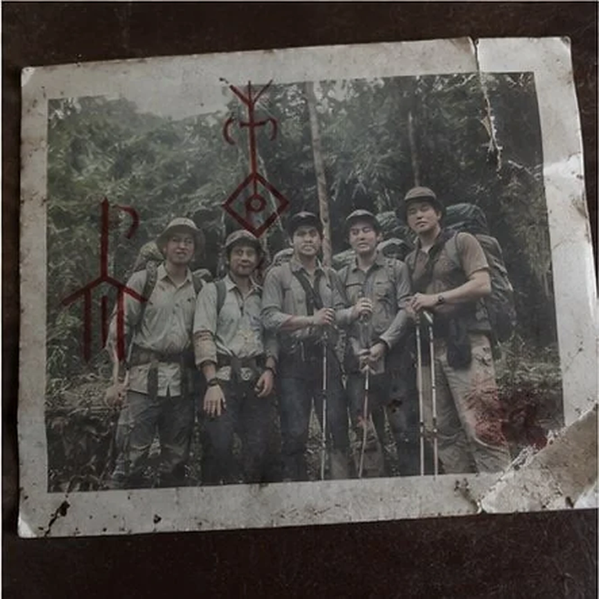

“食人雨林”传说再起：十年失踪案是否有关联？
本文包含读者投稿、旧论坛转载与匿名口述，部分原始链接已经失效。

cache fragment 02/04 · source unavailable · low-resolution recovery网络上长期流传乌伦上游存在“吃掉记忆”的隐秘部落。本文把2011失踪案、2004徒步事故和一张木屋照片放在同一时间线上，一名匿名投稿者还声称“每七年会举行一次大仪式”，但没有提供拍摄时间或采访原件。
编辑部曾向两名长期跑船司机求证，其中一人认为夜间灯火来自旧猎棚，另一人拒绝评论。原始投稿账户现已注销。